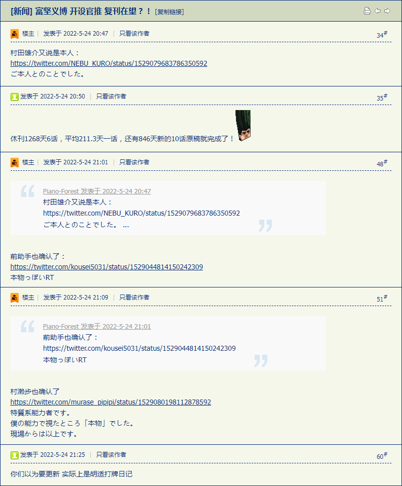
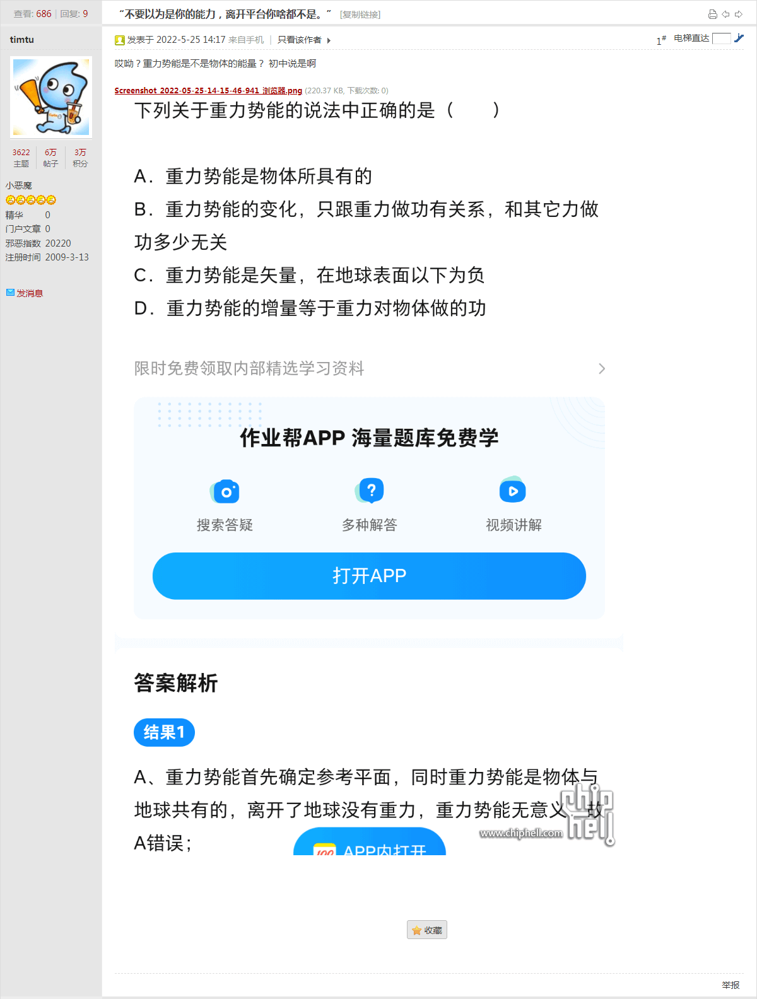
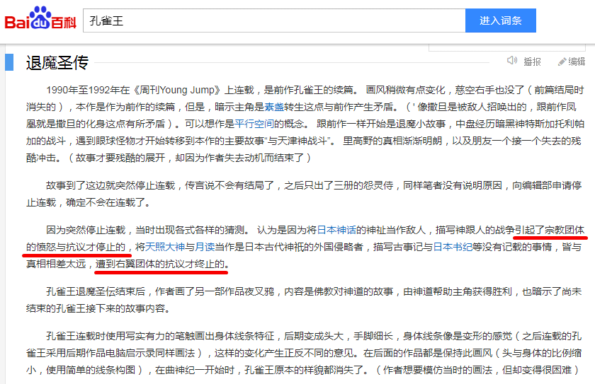
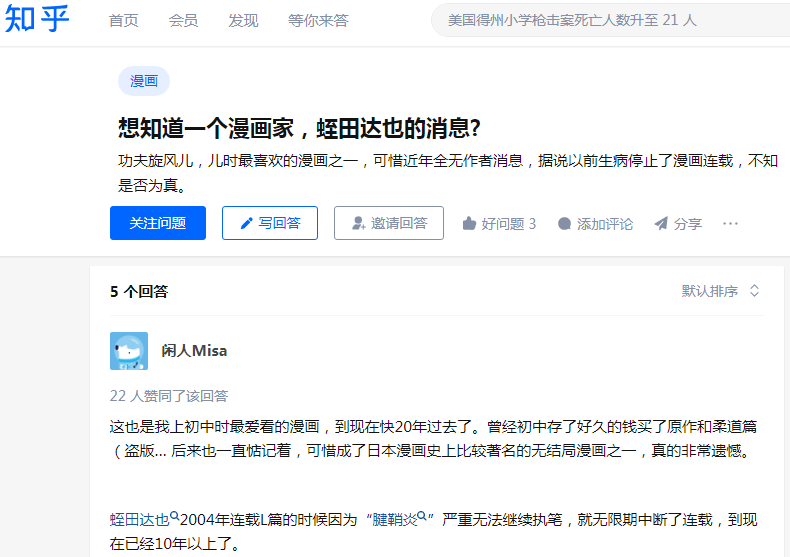
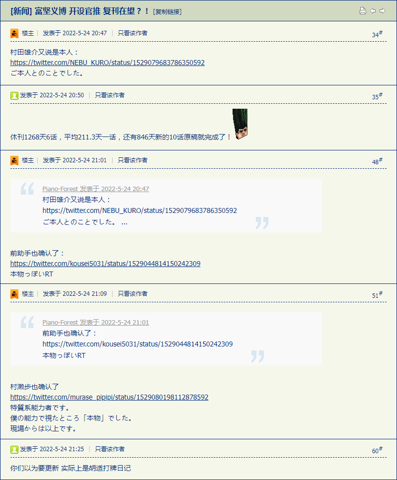
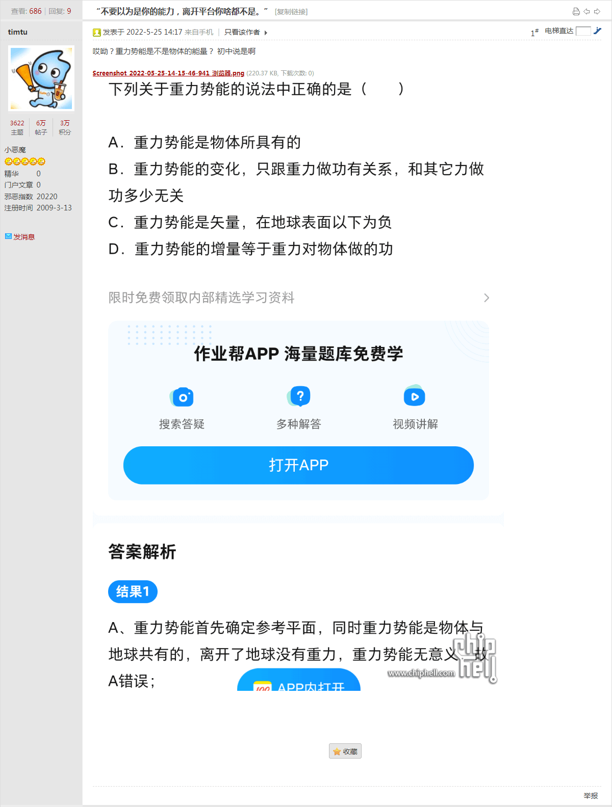
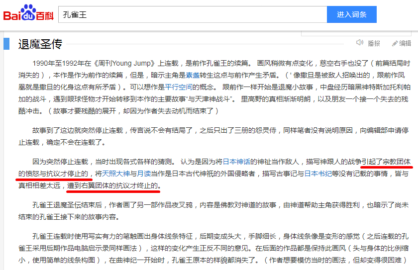
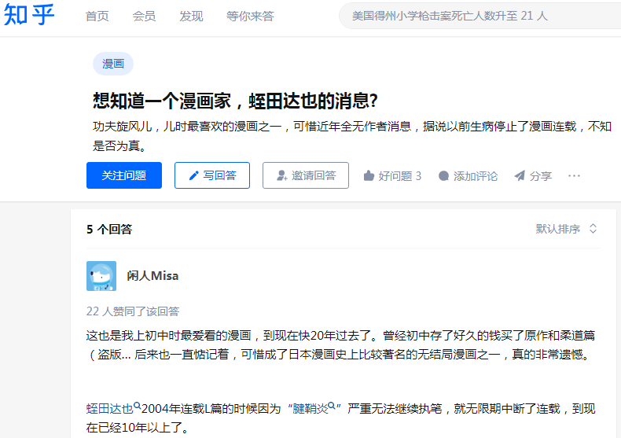

长话短说，备份情报兼素材：




长话短说，备份情报兼素材：




刚爬起来酒劲还在头昏脑涨，上网乱转没发现什么色目含量甚高的重要情报，补充点就事论事的「文艺理论」之学术探讨吧：
类似的观点，之前多年间很多二次元爱好者都说过了，「那谁不就是那谁么」「那谁肯定半路退场」「富坚义博就是不会画那啥型角色」。而这种「自我借鉴」的创作原则，在业内也屡见不鲜。比方说在《范狂夫也在行动：“当时我就念了两串诗，然后又念了一串”》当中提到的「蛙都熊浪子」系列重要讲话精神相关学术纠纷：
即便是真・文艺爱好者也承认，蛙都熊浪子系列重要讲话精神有颇多自我借鉴之处，最典型的就是「主角团队」的配置，已经可以算是富坚义博特色「从“四人帮”到“三缺一”」标准流水线的原型了。
对于「蛙都熊浪子」系列重要讲话精神的印象，也是多年来武德充沛侠义无双一力降十会咋地吧文艺爱好者当中的共识，「朋友换几个，敌人换几个，幕后黑手换个日期举办开盘大典，到了时间点当地画风大变，最终跳出来身边人是关卡BOSS」，其原因也分析过了，「台湾黑帮擅长玩阴的」，对岸就没有其它类型的反派，至少熊浪子「一天之内花光十万新台币」的经历当中观察不到。
顺便补充导致玄冰掌、梯云纵系列重要军事技能失传相关的学术讨论之后续：
按照我中华兲嘲上国那悠久历史和灿烂文化的传统惯例，学术讨论一定会上升到民事纠纷、刑事犯罪直到军事冲突。而在东瀛扶桑瑞穗国，由于战后武德被阉、命根子被攥、菊花被多个驻军基地抽插之缘故，类似学术讨论的上纲上线通常止步于刑事犯罪，不至于上不封顶导致第三次世界大战。
就说本楼备份当中提到的几位知名人物吧。荻野真当时中断连载，市面上就有很多猜测，虽然没有权威机构认证，但共识都是「有碍于一向一揆钦定大目标の不稳定因素于是被扼杀在萌芽状态」，前情提要可以参考《伪满期间日本佛教在中国东北扮演的角色》之类普及读本：
古意真言宗在一九三一年于高野山召开的第七回宗会也对当时的形势作了充分的分析，认为国家和宗团的前途正处在“外满州事变、内反宗运动”的关键时刻，本宗应当宣布法义而“尽济世报国之诚”。对于日本军国主义的侵略中国政策，净土宗和净土具宗也都抱着积极支持的态度。一九三二年十月，日莲宗派代表至满洲，向执政溥仪递交管长的《建议书》和礼品。《建议书》美化伪满政权为“世界和平的基因”、“亚细亚民族之一大福祉”。
而荻野真住所周边的人民群众观察到的现象，可能是若干膀大腰圆虎背熊腰满脸横肉浑身纹满传奇生物的「少林俗家弟子」经常登门拜访嘘寒问暖。总之：
另外一位蛭田达也就更简单了，《功夫旋风儿》第一部就提到了「美国需要假想敌国，被渗透遥控的日本简直是理想敌国」「被利用的高层反派准备好避难所要发动核战」，而在《L》断更前夕更是连载到「驻日美军基地」乃幕后黑手情节，于是「家里猫死了」「伤了惯用手」从此休刊至今。
至于「一天之内百万粉丝」的富坚义博呢，具体情况具体分析，多年前的舆论是这样的：
各位文艺爱好者见仁见智吧。